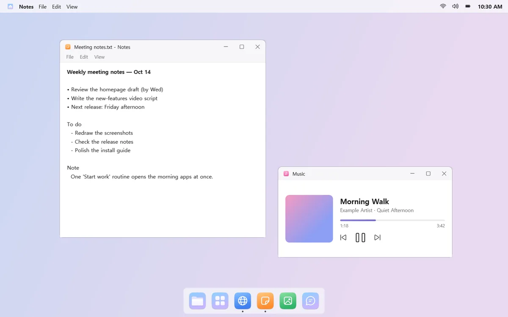
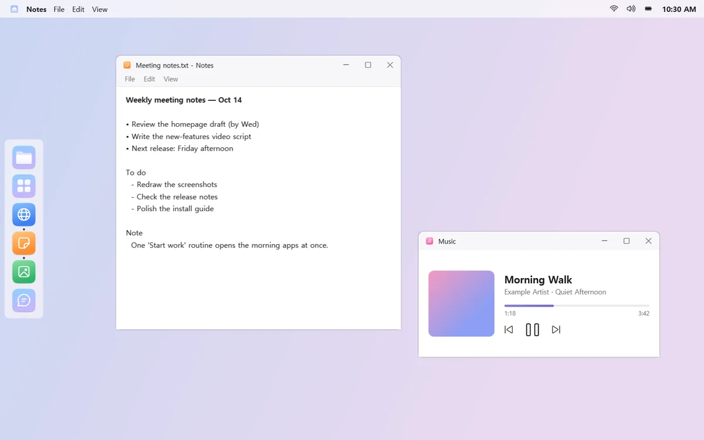
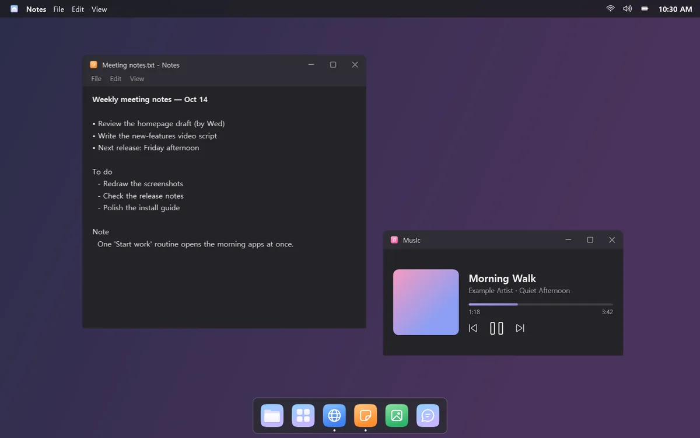
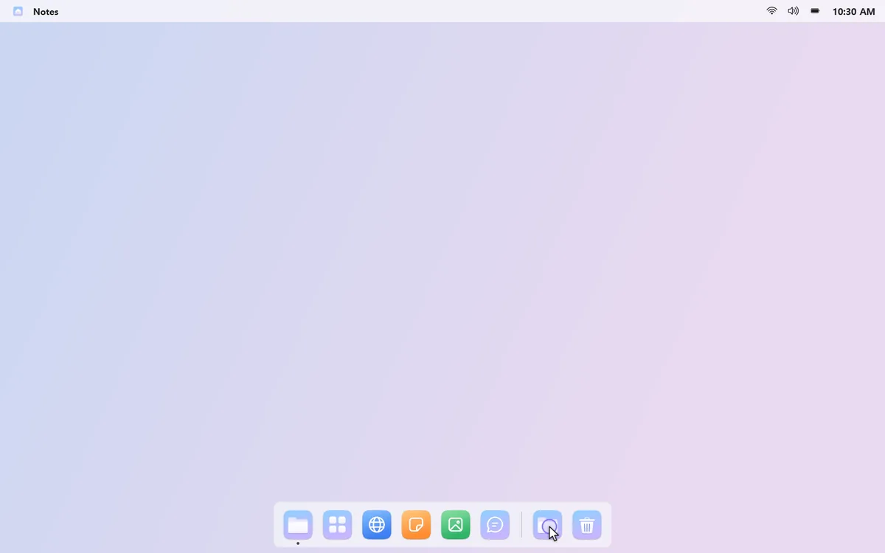
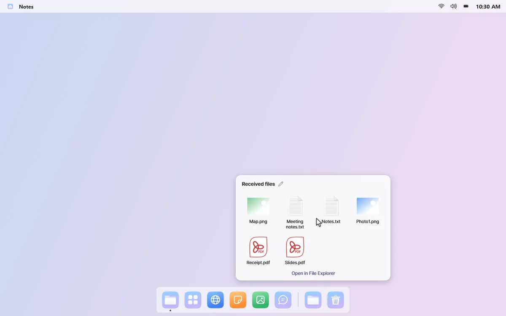
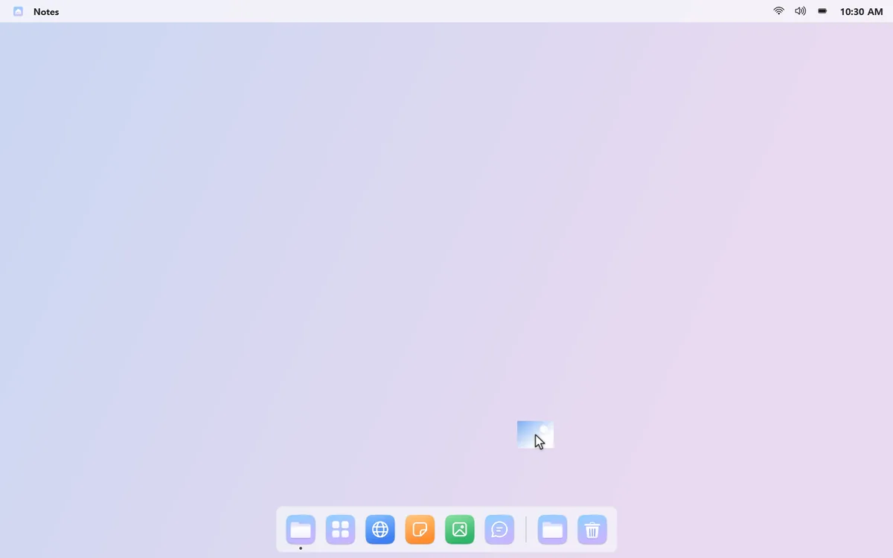
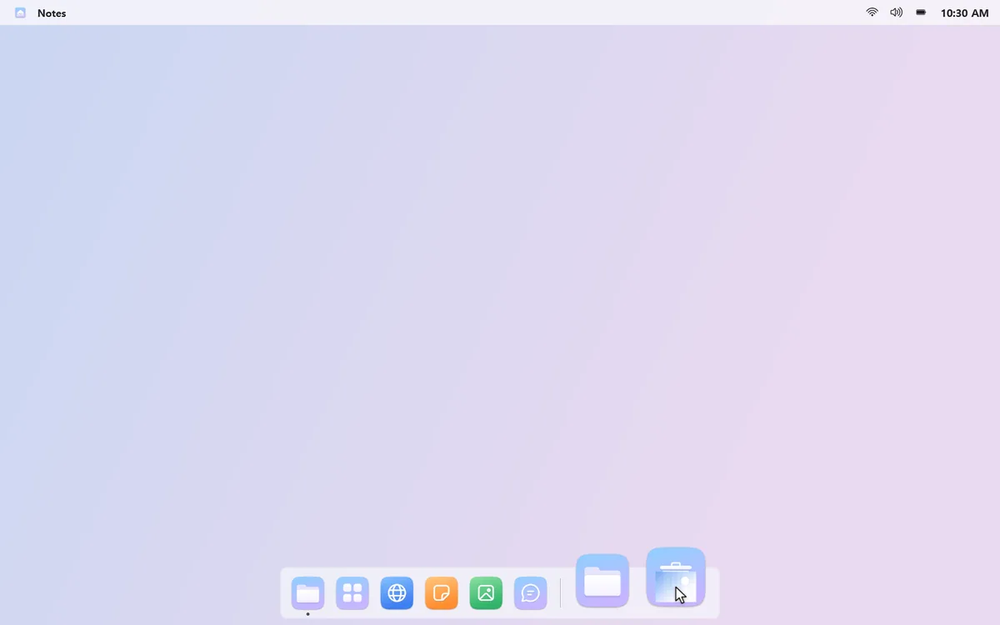
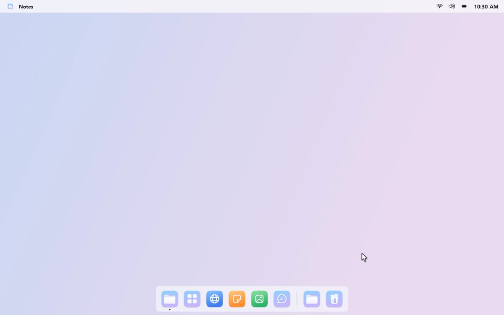
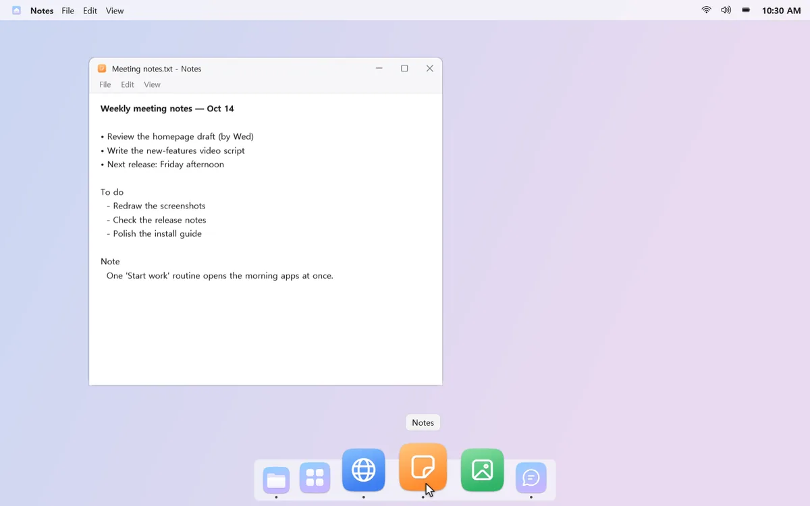
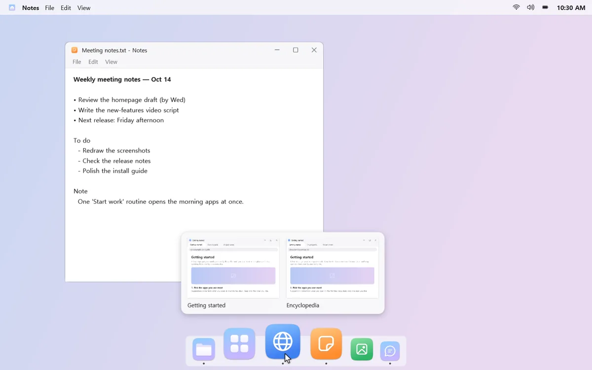

A lighter, tidier bottom edge
Swap the taskbar for a Dock that holds just your apps, folders, and the Recycle Bin. It stays out of the way until you move the pointer to the edge.
Your place, your look
Put the Dock at the bottom, left, right, or top. Drag icons to reorder them, and pick light or dark and how icons grow on hover.



Your Downloads, one click away
Keep a folder in the Dock and click it to see its latest files in a grid. A small dot appears when something new lands there.



The Recycle Bin, right there
Drag a file onto the Recycle Bin in the Dock to throw it away. Click the bin to see what you've tossed lately, and right-click to restore.


Pick windows from live previews
Click an app with several windows and choose the one you want from live previews. If it's on another desktop, mongdock takes you there. You can also show only the current desktop's apps in the Dock.

